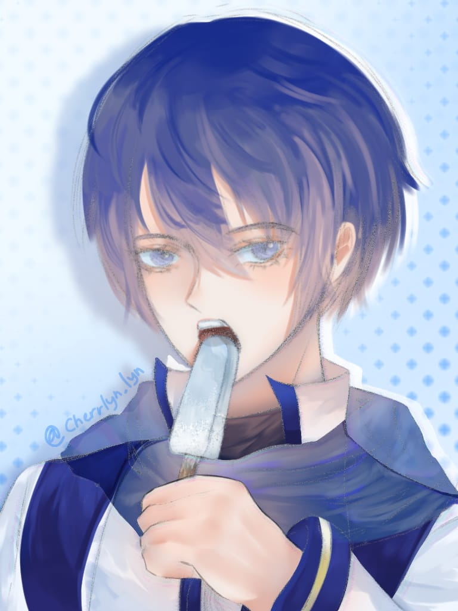
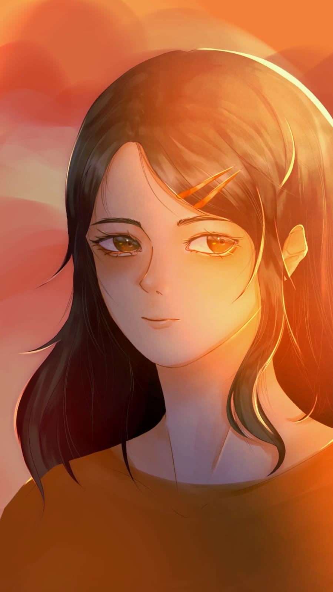
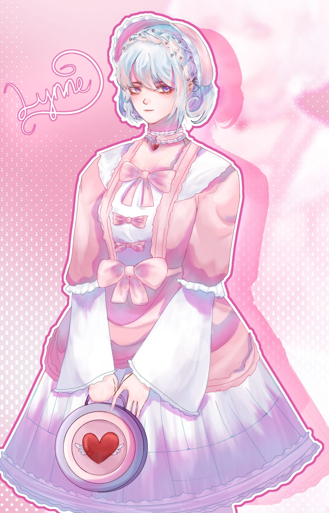

(And why you should buy comission from me (˵ •̀ ᴗ - ˵ ) ✧)

A fan-art of my favorite virtual singer, KAITO! I consider this as one of my best work, as you can see, the rendering technique on his hair and the colors chosen for it match each other perfectly.

A character design from a book-writing competition I did with my friends. What makes me proud of this is the way I draw the eyes and the semi-realism face.

A current work-in-progress, a design for my virtual persona!